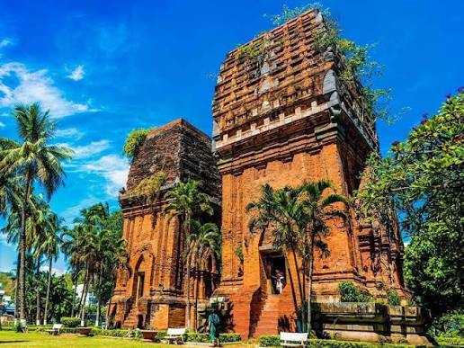
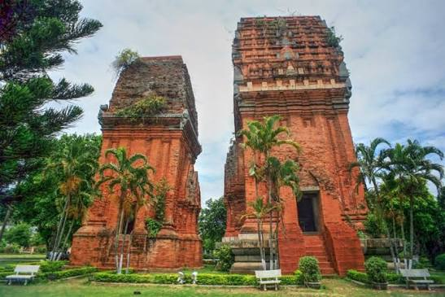
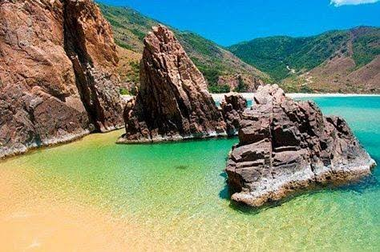
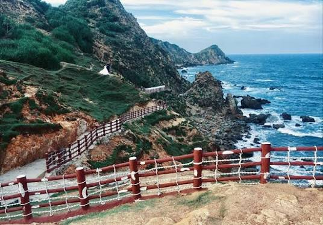
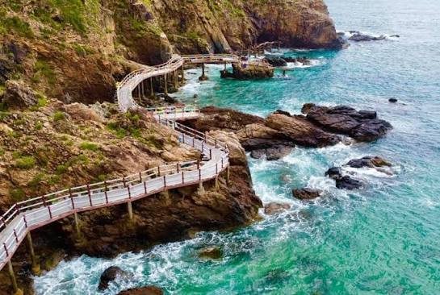

4 địa điểm nên ghé
Quy Nhơn là thành phố biển ở miền Trung Việt Nam, có bãi biển đẹp, đảo đá, di tích Chăm Pa và những cung đường ven biển thoáng đãng. Trang web này giới thiệu bốn điểm đến: Tháp Đôi, Kỳ Co, Eo Gió và Đầm Thị Nại.
Bộ sưu tập ảnh





